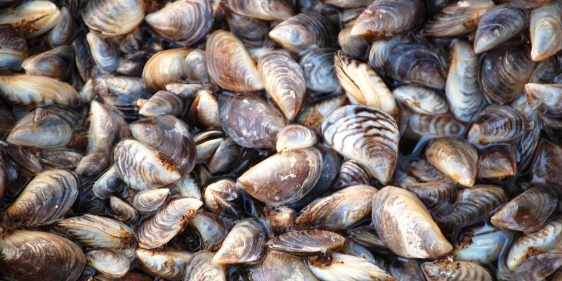
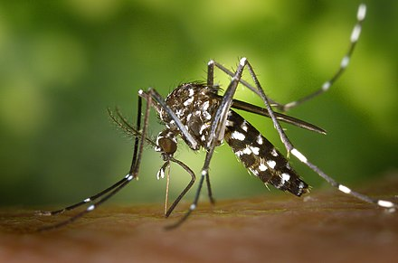

Discover the impact of introduced species on ecosystems and learn about prevention measures.
There are many species found around the world that shouldn't be in the area that they are in.
One example of an invasive species is the zebra mussel. It has been found in places all over the U.S.
Another example of an invasive species is the Asian tiger mosquito.
 Zebra Mussel
 Tiger Mussel
The reason why invasive species are invasive is because they ruin the chances of native animals being successful.
For example, the zebra mussel impacts the species they are found in by reducing the amount of food in the area.
The ways people control invasive species are called control methods.
There are multiple control methods people come up with to get rid of an invasive species. However, all of them might not be the most effectivce.
One example of a control method for zebra mussels is potassium cloride. Scientists have tested this method, but it is known to affect other species.
Even though potassium chloride is the most effective, scientists don't want to use it in big bodies of water. However, it is still called a conrol method.